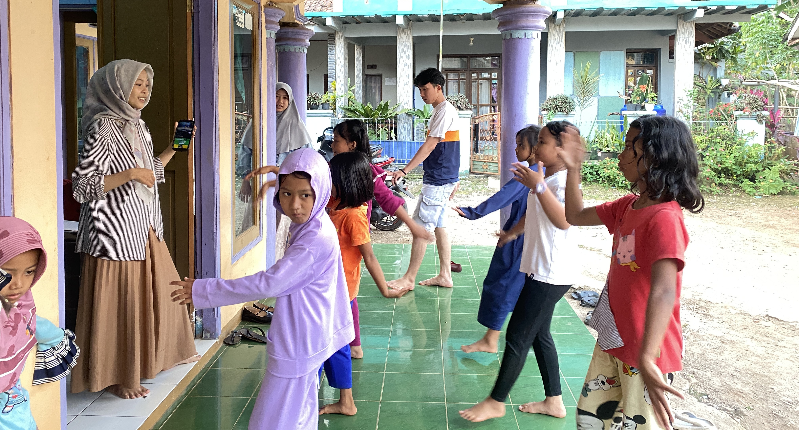
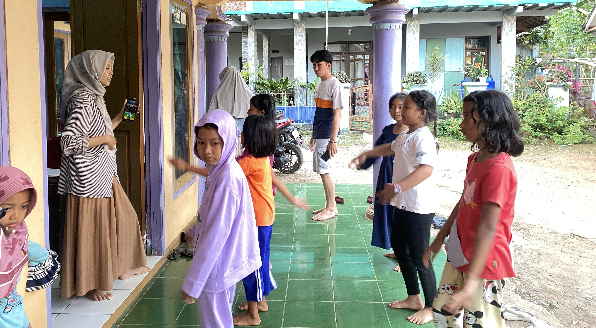

Sukalilah, 2 Agustus 2025 - Dalam rangka menyambut peringatan Hari Ulang Tahun Kemerdekaan Republik Indonesia ke-80, mahasiswa KKN Sisdamas UIN Bandung kelompok 29 bersama anak-anak dan remaja Desa Sukalilah menggelar latihan tari secara rutin setiap sore pukul 16.00 WIB. Latihan ini menjadi salah satu kegiatan yang paling dinantikan, karena akan ditampilkan dalam pentas seni pada acara puncak perayaan 17 Agustus.
Latihan tari tidak hanya sekadar persiapan teknis untuk penampilan, tetapi juga menjadi sarana mempererat kebersamaan antara mahasiswa KKN dan masyarakat setempat. Dengan semangat dan keceriaan, setiap sore anak-anak dan remaja berkumpul untuk berlatih diiringi berbagai lagu dengan ragam tarian yang berwarna.
BBeberapa tarian yang dipersiapkan antara lain Tari Manuk Dadali, yang merupakan tarian khas Sunda penuh makna nasionalisme dan semangat kebersamaan. Selain itu, anak-anak juga dengan antusias menampilkan Tari Upin Ipin yang ceria dan menyenangkan, menambah daya tarik bagi penonton cilik pada saat perayaan nanti. Tidak kalah menarik, kelompok tari remaja melatih gerakan untuk Tari Arabian Song Tabassam, yang menghadirkan nuansa Timur Tengah dengan gerakan lincah dan ekspresif.

Selain tarian tersebut, dipersiapkan pula Tari Domba Kuring sebagai representasi budaya Sunda yang kental, Aku Cantik yang ceria dan penuh energi, serta beberapa variasi dance modern termasuk tarian populer dari TikTok yang dekat dengan dunia anak muda masa kini. Ragam pilihan tari ini diharapkan dapat menghadirkan penampilan yang bervariasi, mulai dari nuansa tradisional hingga modern, sehingga seluruh lapisan masyarakat dapat menikmati pertunjukan.
Antusiasme anak-anak dan remaja terlihat jelas dari semangat mereka berlatih setiap pukul 16.00 WIB. Meski ada rasa lelah setelah seharian beraktivitas, mereka tetap menunjukkan kesungguhan untuk menampilkan yang terbaik. Mahasiswa KKN turut mendampingi, memberikan arahan, serta membimbing setiap gerakan agar sesuai dengan koreografi.
Melalui latihan rutin ini, bukan hanya persiapan pentas seni yang tercapai, tetapi juga tercipta suasana kebersamaan yang hangat antara mahasiswa dan warga. Kegiatan ini menjadi wadah bagi generasi muda untuk mengekspresikan diri, melestarikan seni budaya, sekaligus membangun rasa percaya diri. Diharapkan pada saat puncak perayaan 17 Agustus, penampilan tari di Desa Sukalilah dapat berlangsung meriah, meninggalkan kesan mendalam, dan menumbuhkan semangat nasionalisme di tengah masyarakat.